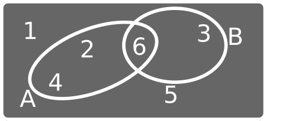
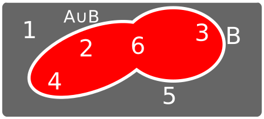
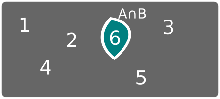
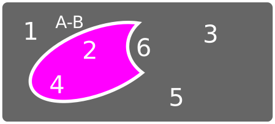
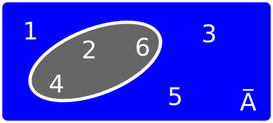
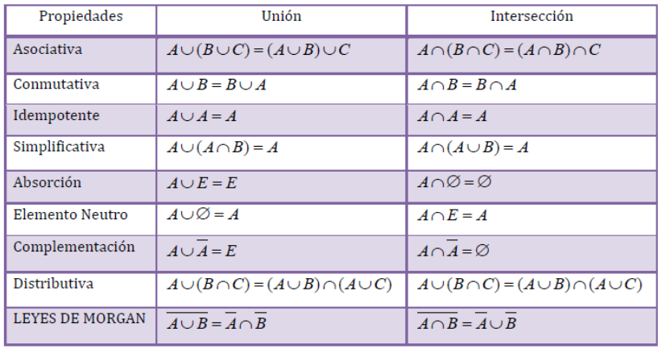
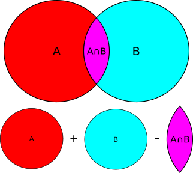
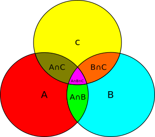
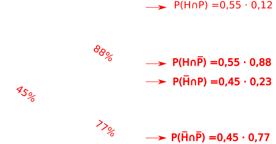

Un proceso a través del cual se obtiene una observación.
Determinista y aleatorio.
1Clasifica los siguientes experimentos como deterministas o aleatorios:
Cada uno de los posibles resultados de un experimento.
Lanzar un dado de seis caras y observar el resultado. \[\omega_1 =\] "sacar un 1", \[\omega_2 =\] "sacar un 2", ..., \[\omega_6 =\] "sacar un 6".
Conjunto formado por todos los sucesos elementales.
Lanzar un dado de seis caras y observar el resultado. \[ \Omega = \{\omega_1, \omega_2, \omega_3, \dots, \omega_6\} \]
Un subconjunto del espacio muestral.
Lanzar un dado de seis caras y observar el resultado. \[ A = \] "sacar un número par" \[= \{\omega_2, \omega_4, \omega_6\} \] \[ B = \] "sacar menos de 3" \[= \{\omega_1, \omega_2 \} \] \[ C = \] "sacar un múltiplo de 3" \[= \{\omega_3, \omega_6 \} \]
Suceso imposible: \[ \emptyset \]. Suceso seguro: \[ \Omega \].
2En el experimento de "lanzar un dado de 12 caras y observar su resultado" calcula:
Unión \[ A \cup B \], intersección \[ A \cap B \], complementario \[ \overline{A} \], diferencia \[ A - B = A \cap \overline{B} \].
Experimento: "Lanzar un dado de 6 caras y anotar el resultado". \[A = \] "Sacar número par" y \[B = \] "Sacar múltiplo de 3".

\[ A \cup B \]

\[ A \cap B \]

\[ A - B \]

\[ \overline{A} \]

3Dado el experimento "lanzar un dado de 6 caras y observar el resultado" y sean \[A\], \[B\] y \[C\] los sucesos "sacar un número par", "sacar un número menor que 3" y "sacar un múltiplo de 3", respectivamente; expresa usando notación y calcula los sucesos elementales que forman:
Dos sucesos \[ A \] y \[ B \] son incompatibles si no pueden suceder a la vez y por tanto \[A \cap B = \emptyset \].
Propiedades de la unión y de la intersección.

\[\overline{A \cup B} = \bar{A} \cap \bar{B} \] \[\overline{A \cap B} = \bar{A} \cup \bar{B} \]
Medida de la incertidumbre de que ocurra un suceso al realizar un experimento aleatorio.
Ley de Laplace. Solo válido para sucesos equiprobables. \[ P(A) = \frac{\text{casos favorables}}{\text{casos posibles}} \]
4De una baraja española de 40 cartas se extrae una. Calcula las siguientes probabilidades:
5De una urna que contiene 10 bolas numeradas del 1 al 10 se extrae una bola. Consideremos los sucesos A = "obtener número par", B = "obtener un número mayor que 7" y C = "obtener un múltiplo de tres". Calcula las probabilidades de los sucesos:
6Dado el experimento de lanzar dos dados de 6 caras, calcula las probabilidades de los siguientes sucesos:
Ley de los grandes números. La frecuencia relativa de la ocurrencia de un suceso cuando aumentamos mucho el número de experimentos se estabiliza en torno a un número que podemos tomar como la probabilidad.
\[ P : \Omega \rightarrow \mathbb{R} \]. Para todo suceso \[A\], \[P(A) \ge 0\]. \[P(\Omega) = 1\]. Dados \[A, B\] sucesos incompatibles: \[P(A \cup B) = P(A) + P(B)\].
\[P(\emptyset) = 0 \Rightarrow 0 \le P(A) \le 1\] y \[ P(\overline{A}) = 1 - P(A) \].
\[P(A \cup B) = P(A) + P(B) - P(A\cap B)\]

\[P(A \cup B \cup C) = P(A) + P(B) + P(C) - P(A\cap B) - P(A \cap C) - P(B \cap C) + P(A \cap B \cap C)\]

\[P(A-B) = P(A) - P(A \cap B)\]
7Sean A y B dos sucesos incompatibles de un experimento aleatorio tales que \[P(A)= 0,2\] y \[P(A\cup B)=0,6\]. Calcula \[P(B)\].
8Considérense los sucesos \[A\] y \[B\] asociados a un experimento aleatorio con \[P(A)= 0,7\]; \[P(B)=0,6\] y \[P(A\cap B) = 0,4\]. Calcula \[ P(A\cup B)\], \[P(\overline{A} \cup \overline{B})\] y \[P(A - B)\].
9Sean los sucesos A y B tales que \[P(A) = 3/8\], \[P(B)= 1/2\] y \[P(A \cap B) = 1/4\]. Calcula \[P(A \cup B)\], \[P(\overline{A})\], \[P(\overline{A} \cup \overline{B})\], \[P(\overline{A} \cap \overline{B})\] y \[P(A - B)\].
\[ P(B / A ) \]. Probabilidad de que se cumpla B sabiendo que se cumple A.
10En una caja hay pinzas grandes y pequeñas de madera y de plástico según se refleja en la tabla. Se elige una al azar. Calcula la probabilidad de que:
| Pinzas grandes | Pinzas pequeñas | |
| Madera | 10 | 19 |
| Plástico | 18 | 23 |
\[G = \text{"que sea grande"} \] \[P = \text{"que sea de plástico"} \] a) Que sea grande \[\rightarrow P(~~~~~~~~~)\] b) Que sea grande y de plástico \[\rightarrow P(~~~~~~~~~)\] c) Que sea grande sabiendo que es de plástico \[\rightarrow P(~~~~~~~~~)\]
11¿Qué probabilidades nos dan y qué probabilidades nos piden en el siguiente problema?: \[H = \text{"ser hombre"}\] \[M = \text{"ser mujer"}\] \[A = \text{"adquirir un producto"}\]
Según cierto estudio de un departamento de ventas, el 30% de sus clientes son hombres, el 25% de sus clientes adquieren algún producto y el 40% de los que adquieren algún producto son mujeres. ¿Qué porcentaje de sus clientes son mujeres y adquieren algún producto del departamento de electrónica?
12¿Qué probabilidades nos dan y qué probabilidades nos piden en el siguiente problema?: \[D = \text{"estar defectuoso"}\] \[I = \text{"pasar la inspección"}\]
Cuando los motores llegan al final de una cadena de producción, se escogen los que deben pasar una inspección. Se producen un 10% de motores defectuosos, y el 60% de todos los motores defectuosos y el 20% de los buenos pasan una inspección. ¿Probabilidad de que un motor sea defectuoso y pase la inspección y de que un motor sea bueno y pase la inspección?
\[ P(B / A ) = \frac{P(A \cap B)}{P(A)} \]
13En una encuesta realizada en A Coruña se determinó que el 40% de los encuestados lee el periódico La Voz de Galicia, el 15% lee Nós Diario y el 3% lee ambos periódicos. Seleccionado un lector al azar del periódico Nós Diario, calcular la probabilidad de que lea también La Voz de Galicia.
\[ P(B / A ) = \frac{P(A \cap B)}{P(A)} \Rightarrow P(A \cap B) = P(A) \cdot P(B / A ) \] \[ P(A \cap B \cap C) = P(A) \cdot P(B / A ) \cdot P(C / A \cap B) \]
14Dado el experimento "tirar un dado tres veces", calcular la probabilidad de sacar un número par la primera vez, sacar 6 la segunda vez y sacar un múltiplo de 3 la tercera.
15Tenemos una bolsa con 3 bolas blancas y 5 negras. Calcular la probabilidad de que al sacar dos bolas la primera sea blanca y la segunda negra.
Dos sucesos \[A\] y \[B\] son independientes si: \[P(A) = P(A/B)\], \[P(B) = P(B/A)\] y \[P(A \cap B) = P(A) \cdot P(B)\].
16Sean \[A\] y \[B\] dos sucesos tales que \[P(A)=0,6\] y \[P(B)=0,3\]. Si \[P(A/B)=0,1\] calcúlese \[P(A \cup B)\] y \[P( \overline{B}/ A )\].
17En un experimento aleatorio, sean A y B dos sucesos con \[P(\overline{A})=0,4\]; \[P(B)=0,7\]. Si \[A\] y \[B\] son independientes, calcula \[P(A \cup B)\] y \[P(A−B)\].
18Se sabe que \[P(B/A)=0,7\], \[P(A/B)=0,4\] y \[P(A)=0,2\]. Calcula \[P( A \cap B)\], \[P( B)\] y \[P(A \cup \overline{B})\]. Justifica si son independientes o no los sucesos \[A\] y \[B\].
19Según cierto estudio de un departamento de ventas, el 30% de sus clientes son hombres, el 25% de sus clientes adquieren algún producto y el 40% de los que adquieren algún producto son mujeres. ¿Qué porcentaje de sus clientes son mujeres y adquieren algún producto del departamento de electrónica?
20Cuando los motores llegan al final de una cadena de producción, se escogen los que deben pasar una inspección. Se producen un 10% de motores defectuosos, y el 60% de todos los motores defectuosos y el 20% de los buenos pasan una inspección. ¿Probabilidad de que un motor sea defectuoso y pase la inspección y de que un motor sea bueno y pase la inspección?
21Tenemos dos urnas. La primera con dos bolas blancas y 5 negras y la segunda con 3 bolas blancas y 1 negra. Lanzamos una moneda; si sale cara cogemos una bola de la primera urna y si sale cruz cogemos una bola de la segunda. ¿Cuál es la probabilidad de coger una bola blanca?
Un conjunto de sucesos tal que su unión da el espacio muestral y los sucesos son incompatibles dos a dos. Por ejemplo, dado el experimento "lanzar un dado de 6 caras", los sucesos A="sacar par" y B="sacar impar" formarían un conjunto completo de sucesos.
Sea \[A_1, A_2, \dots, A_n\] un conjunto completo de sucesos y sea \[B\] un suceso cualquiera: \[ P(B) = \sum_{i=1}^n P(B/A_i)P(A_i)\]
22Un artículo distribuido en tres marcas distintas A, B y C se vende en un supermercado. Se observa que el 30% de las ventas diarias del artículo son de la marca A, el 50% son de la marca B y el resto son de la marca C. Se sabe además que el 60% de las ventas de la marca A se realizan por la mañana, el 55% de las ventas de la marca B por la tarde y el 40% de la marca C se vende por la mañana. Calcula el porcentaje de ventas del artículo efectuadas por la mañana.
23Un estudio sociológico afirma que 3 de cada 10 personas de una determinada población son obesas, de las cuales el 60% sigue una dieta. Por otra parte, el 63% de la población no es obesa y no sigue una dieta. ¿Qué porcentaje de la población sigue una dieta?
24La plantilla de unos grandes almacenes está formada por 200 hombres y 300 mujeres. La cuarta parte de los hombres y la tercera parte de las mujeres solo trabajan en el turno de mañana. Elegido uno de los empleados al azar, ¿cuál es la probabilidad de que sea hombre o solo trabaje en el turno de mañana?
25En una ciudad, el 55% de la población en edad laboral son hombres; de ellos, un 12% está en paro. Entre las mujeres el porcentaje de paro es del 23%. Si en esta ciudad se elige al azar una persona en edad laboral:
26En una ciudad, el 55% de la población en edad laboral son hombres; de ellos, un 12% está en paro. Entre las mujeres el porcentaje de paro es del 23%. Si en esta ciudad se elige al azar una persona en edad laboral:

27En una ciudad en la que hay el doble número de hombres que de mujeres se declara una epidemia. Un 4% de los habitantes son hombres y están enfermos, mientras que un 3% son mujeres y están enfermas. Se elige al azar un habitante de la ciudad, calcular:
28En un mercado de valores cotizan un total de 60 empresas, de las que 15 son del sector bancario, 35 son industriales y 10 son del sector tecnológico. La probabilidad de que un banco de los que cotizan en el mercado se declare en quiebra es 0,01, la probabilidad de que se declare en quiebra una empresa industrial es 0,02 y de que lo haga una empresa tecnológica es 0,1. ¿Cuál es la probabilidad de que se produzca una quiebra en una empresa del citado mercado de valores?
29Un estudio sociológico afirma que 3 de cada 10 personas de una determinada población son obesas, de las cuales el 60% sigue una dieta. Por otra parte, el 63% de la población no es obesa y no sigue una dieta. ¿Qué porcentaje de la población sigue una dieta?
| \[D\] | \[\overline{D}\] | ||
|---|---|---|---|
| \[O\] | 18 | 12 | 30 |
| \[\overline{O}\] | 7 | 63 | 70 |
| 25 | 75 | 100 |
30En una empresa, el 20% de los trabajadores son mayores de 30 años, el 8% desempeña algún puesto directivo y el 6% es mayor de 30 años y desempeña algún puesto directivo.
31Se realiza un estudio para determinar si los hogares de una pequeña ciudad se suscribirían a un servicio de TV. Los hogares se clasifican de acuerdo con su nivel de renta.
| Renta baja | Renta media | Renta alta | |
|---|---|---|---|
| Se suscribirían | 0,05 | 0,15 | 0,1 |
| No se suscribirían | 0,15 | 0,47 | 0,08 |
Probabilidades a posteriori. \[P(A/B) = \frac{P(A \cap B)}{P(B)}\]
32Una empresa quiere comercializar una herramienta eléctrica para la construcción y por tanto es probada por 3 de cada 5 trabajadores del sector. De los que la probaron, el 70% da una opinión favorable, el 5% da una opinión desfavorable y el resto opina que le es indiferente. De los que no probaron la herramienta, el 60% da una opinión favorable, el 30% opina que le es indiferente y el resto da una opinión desfavorable. Se sabe que la empresa comercializará la herramienta si al menos el 65% de los trabajadores del sector da una opinión favorable.
33Se quiere hacer un estudio sobre la situación laboral de los trabajadores en tres sectores de la economía que denotaremos por B1, B2 y B3. La mitad de los trabajadores pertenecen al primer sector B1, y el resto se reparten en partes iguales entre los otros dos sectores B2 y B3. El 8% de los del sector B1, el 4% de los del sector B2 y el 6% de los del sector B3 están en paro.